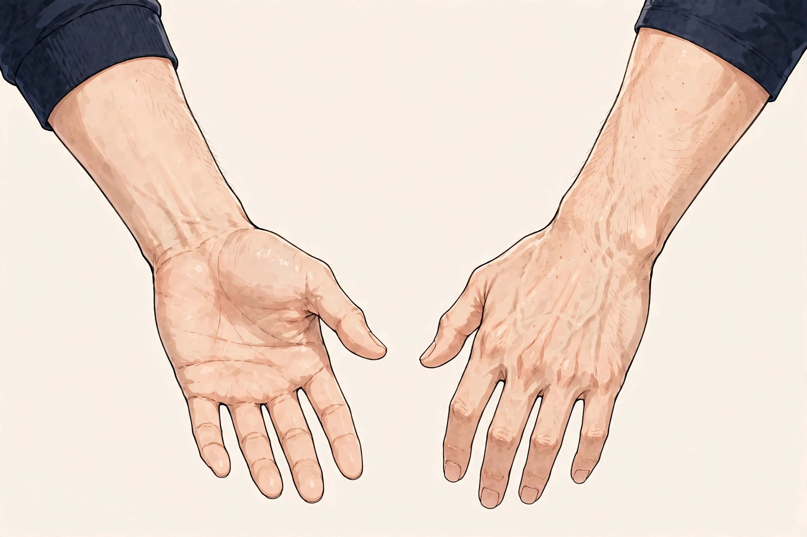

SYMPTOM GUIDE ｜ 東三国・新大阪
ばね指でお悩みの方へ東三国・新大阪の男性専用整体院 北辰堂

指を曲げると引っかかり、伸ばそうとすると「カクン」と跳ねるように伸びる。朝は指がこわばって動かしにくい——。ばね指は、指の腱と腱鞘の間で起こる引っかかりの症状で、正式には弾発指・狭窄性屈筋腱腱鞘炎と呼ばれます。
中高年の方や、手をよく使う仕事の方、糖尿病のある方に多いとされます。このページでは、引っかかりの仕組みと要因、ツボ、セルフケア、受診の目安をまとめました。一般的な健康情報としてお読みください。
① ばね指とは
指を曲げるための腱（屈筋腱）は、指の関節ごとに「靭帯性腱鞘」というトンネル状の組織を通っています。そのうち指の付け根（手のひら側）にあるトンネルはA1プーリーと呼ばれ、腱の浮き上がりを抑える要の部分です。ばね指は、このA1プーリーの部分で腱と腱鞘の滑りが悪くなり、腱が引っかかってから一気に通ることで、指がバネのように弾ける状態です。
背景には、腱や腱鞘が厚くなる変化があります。使いすぎによる炎症の繰り返しのほか、加齢やホルモンの変化、糖尿病や関節リウマチなど全身の状態が関係する場合もあります。親指・中指・薬指に多く、朝のこわばりや、指の付け根の痛み・腫れぼったさから始まることが一般的です。
進行すると、引っかかりが強くなって反対の手で伸ばさないと伸びなくなり、最終的には指が曲がったまま固定してしまうこともあります。初期は負担の調整が中心ですが、固定してきた場合は医療機関での対応（注射や小さな手術）が検討されます。状態の段階を見極めることが大切です。
屈筋腱は指の付け根のA1プーリーというトンネルを通ります。ここで滑りが悪くなると、指が引っかかってから弾けるように動きます。位置は目安です。
② 要因の整理
ばね指の背景には、腱鞘への負担の繰り返しと、全身の状態が関わっていることが多くあります。
- 握る動作の繰り返し：工具の使用、重い物の保持、ゴルフのグリップなど、指を強く曲げる動作の繰り返しがA1プーリーへの負担になります。
- スマートフォン・PCの長時間使用：片手でのスマホ保持と親指の操作、強い打鍵などが、指の腱の負担を積み重ねます。
- 加齢と腱鞘の変化：年齢とともに腱や腱鞘が厚く硬くなり、滑走の余裕が減ります。中高年に多い理由の一つです。
- 糖尿病・関節リウマチなどの持病：全身の状態が腱鞘の変化と関係する場合があります。複数の指に同時に起こる場合は、全身的な背景の確認が大切です。
- ホルモンバランスの変化：妊娠・出産期や更年期に起こりやすいことが知られています。男性でも中年期以降に増えます。
- 急な負荷の増加：引っ越しや大掃除、久しぶりの力仕事など、急な手の酷使が引き金になることがあります。
③ セルフチェックリスト
指の状態を振り返るためのチェックです。
- 指の曲げ伸ばしで引っかかりやカクンという感触がある
- 朝、指がこわばって動かしにくい
- 指の付け根（手のひら側）が痛い、腫れぼったい
- 指を伸ばすときに反対の手の助けがいることがある
- 握る動作で手のひらに痛みが出る
- 仕事やスマホの使用後に指のだるさが残る
- 複数の指に症状がある
- 指が曲がったまま戻りにくくなってきた
チェックは診断のためのものではありません。指が固定して動かない、強い腫れや熱感がある場合は、セルフケアより先に⑧の受診の目安を確認してください。
④ 東洋医学から見た考え方とツボ
東洋医学では、指先まで手の陽明大腸経や手の少陽三焦経などが巡り、局所の滞りは経路全体の巡りとつながるという見方をします。ばね指のような引っかかりは、前腕から指先までの巡りの滞りとして捉え、手首まわりのツボから整える考え方があります。
陽渓・合谷・内関は、手まわりで使われる代表的なツボです。北辰堂では鍼灸施術は行いませんが、ツボの考え方は、前腕の緊張を緩める施術の組み立てと、セルフケアの案内に活かしています。引っかかる指そのものを強く揉む・無理に伸ばすことは、悪化の恐れがあるため行いません。
陽渓は手首の親指側のくぼみ、合谷は手の甲の親指と人差し指の骨の間、内関は手首の内側から指3本分ほど肘寄りにあります。位置は目安です。
ツボ：陽渓（ようけい）
位置：親指を反らしたときに手首の親指側にできるくぼみ（解剖学的嗅ぎタバコ入れ）の底にあります。
押し方：反対側の親指で、くぼみを捉えてゆっくり圧を加えます。手首の親指側の張りを緩める目的で使います。
ツボ：合谷（ごうこく）
位置：手の甲側、親指と人差し指の骨が交わる手前のくぼみです。
押し方：反対側の親指で、やや人差し指側の骨に向けて押し込むように圧を加えます。左右3〜5回ずつ。手の疲れが溜まった日のケアとして使います。
ツボ：内関（ないかん）
位置：手首の内側、掌側の横シワから指3本分ほど肘に寄った、2本の腱の間にあります。
押し方：反対側の親指でゆっくり圧を加え、5秒押して離します。前腕の緊張を整える目的で使います。
⑤ 整体・リラクゼーションでの施術の考え方
北辰堂の施術では、引っかかる指そのものへ強い刺激を加えることはしません。前腕の屈筋群・伸筋群の緊張を緩め、指の腱にかかる張力を減らす方向で組み立てます。あわせて、握り方や道具の工夫など、負担を減らす日常の調整を一緒に整理します。
ばね指の段階によっては、医療機関での注射や装具、手術といった対応が適切な場合があります。引っかかりが固定してきた、痛みが強いといった状態では、当院のケアは補助的な位置づけであり、まず整形外科での評価を案内します。
糖尿病など持病のある方は、腱鞘の状態と全身の管理が関係する場合があります。持病の治療を受けている場合は、その経過も含めて医療機関と連携することが大切です。
⑥ セルフケア
セルフケアの基本は、腱への負担を減らすことです。引っかかる指を無理に伸ばしたり、強く揉んだりすることは避けてください。
①痛みのない範囲で指をゆっくり曲げる ②引っかかる手前で止める ③ゆっくり戻す、を数回繰り返します。引っかかりを無理に乗り越える練習はしないでください。
セルフケア1：負担の調整（最優先）
痛みや引っかかりの出る動作の量を減らします。グリップの太い道具への変更、スマホの両手操作、重い物を握る作業の分散など、具体的な代替を用意します。完全に休ませるのが難しい場合は、分散が現実解です。
セルフケア2：腱の滑走練習（やさしく）
痛みのない範囲で、指をゆっくり曲げて戻す動きを数回繰り返します。引っかかる位置を無理に超えさせないことが大切です。朝のこわばりが強い時間帯は、温めてから行います。
セルフケア3：温めるケア
入浴や蒸しタオルで手を温めると、朝のこわばりが和らぎやすくなります。腫れや熱感が強い場合は温めず、医療機関に相談してください。
セルフケア4：夜間の安静
症状の強い時期は、夜間に指が曲がったまま固まらないよう、医療機関や薬局で相談のうえ装具を使う選択肢もあります。自己判断での固定が長引く場合は、整形外科に相談してください。
⑦ 場面別の注意
- 仕事中（手作業・PC）：工具のグリップは太めのものに替え、強い握り込みを減らします。キーボードの打鍵は力を抜き、手首の角度を保つ環境を整えます。
- スマートフォン使用時：片手持ちと親指だけの操作は負担の代表です。スタンドや音声入力の活用で、指の出番を減らします。
- 家事のとき：瓶のふた開け、雑巾絞り、重い鍋の保持は引っかかりの引き金になりやすい動作です。補助具の活用や分担も大切な対応です。
- スポーツ時：ゴルフやテニスなどグリップを強く握る競技は、症状のある時期は量を調整します。グリップの太さの見直しも有効です。
⑧ 受診の目安
- 指が曲がったまま・伸びたまま固定して戻らない
- 指の付け根の強い腫れ、熱感、赤みがある
- 複数の指に次々と症状が広がっている
- 糖尿病や関節リウマチの治療を受けている
- 数週間、負担を調整しても引っかかりが強くなる一方である
- 指の感覚が鈍い、しびれを伴う
ばね指の評価と、注射・装具・手術といった対応は医療機関（整形外科・手外科）の領域です。引っかかりが固定してきた場合や、持病のある方は、早めに受診してください。
⑨ よくある質問
Q. ばね指は様子を見ていてよいですか？
負担の調整で落ち着く場合もありますが、引っかかりが進むと医療機関での対応が必要になります。固定してきた場合は早めの受診が大切です。当院の施術は、前腕のケアと負担調整の補助です。
Q. 引っかかる指は、無理に伸ばして動かしたほうがよいですか？
無理に乗り越える動きは、腱と腱鞘の摩擦を強めて悪化させる場合があります。痛みのない範囲での滑走練習にとどめ、強い引っかかりは医療機関で相談してください。
Q. 整体では何をしますか？
指そのものへの強い刺激は行わず、前腕の筋肉の緊張を緩め、腱にかかる張力を減らすケアを行います。あわせて、日常動作での負担の分散を一緒に考えます。
Q. 注射や手術が怖いのですが、避けられますか？
段階によっては負担の調整や装具で経過を見ることもありますが、固定した引っかかりには医療的な対応が適切な場合があります。怖さも含めて整形外科で相談し、説明を受けたうえで判断することをおすすめします。
北辰堂のご案内
北辰堂は、大阪市淀川区東三国二丁目にある整体院です。男性スタッフ1人で運営しているため、男性専用としています。施術歴30年の平賀建人（鍼灸師・国家資格）が、整体とリラクゼーションを行います。当院では鍼灸施術は行いません。営業は平日・土曜17:00〜22:00、日曜10:00〜22:00の完全予約制です。料金は60分 初回2,000円／2回目以降6,000円、90分 初回3,000円／2回目以降9,000円で、お支払いは現金のみです。プライバシーへの配慮のため、詳しい住所はご予約確定後にLINEでご案内します。
メニュー・料金は料金・メニューページ、施術者については当院についてをご覧ください。
関連するお悩み
ご予約・ご相談はLINEから
東三国・新大阪・淀川区周辺で、体のケアの相談先をお探しの方は、LINE公式アカウント（北辰堂）からお気軽にご連絡ください。現在の状態をお聞きしたうえで、施術の進め方をご案内します。
LINEで予約する